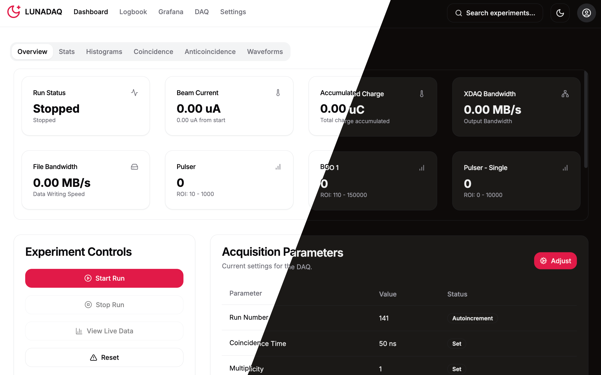

WebDAQ — data acquisition for the LUNA experiment



Run control for CAEN digitizers, in a browser. Configure the boards, tune the filters against a live spectrum, take runs, watch the rates and the beam current, and write the shift entry — from the same interface, on the DAQ machine or from any PC on the network.
Acquisition runs in process: the boards are read, decoded and written by CaenDAQ, a C++ library bound into the Python server. There is no XDAQ, no Docker container and no separate monitoring process.
Where to start
New here? Read A complete session — one run from a cold machine to a written logbook entry.
Section |
Read it for |
|---|---|
Getting it onto a machine. |
|
The whole workflow, end to end. |
|
What happens when you press Start; what is stored and where; what can be changed during a run. |
|
Screen-by-screen reference. |
|
Scanning and adding boards, thresholds and trapezoid settings, PSD gates, multi-board synchronisation, online tuning. |
|
The histogram dashboard, regions of interest, and the per-run |
|
TetrAMM, RBD 9103, a monitored Graphite value, and what the two accumulated charges mean. |
|
Graphite, Grafana, the Stats page, |
|
Reading and writing the collaboration logbook from run control. |
|
What lives where in the repository and in a working directory. |
|
Technical reference for developers. |
|
When something does not work. |
Key capabilities
In-process acquisition of multiple CAEN digitizers into one synchronised
.caendatfile per runOnline tuning of thresholds, gates and trapezoid parameters while the run is going
Live spectra, waveforms and PSD plots, with server-side regions of interest recorded into each run
Beam current and accumulated charge from a picoammeter or from a monitored accelerator value
Rates and slow control archived to Graphite, with Grafana alerts tied to the run
FAIR-compliant run metadata, ELOG logbook entries and Telegram alerts
Support
For technical support or feature requests:
Jakub Skowroński: jakub.skowronski@pd.infn.it
Alessandro Compagnucci: alessandro.compagnucci@gssi.it
Riccardo Gesuè: gesue.riccardo@gssi.it